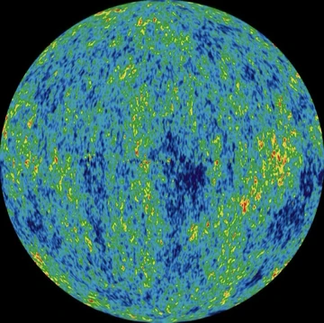
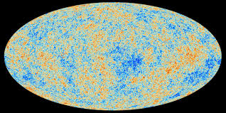
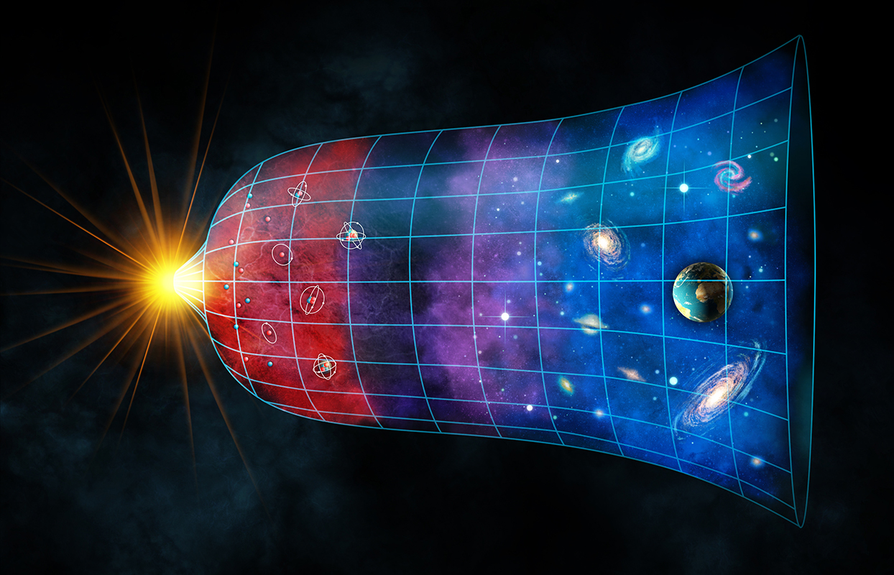

| Feature | Observable Universe | Entire Universe |
|---|---|---|
| Size | 93 Billion Light Years | Infinite (or much larger) |
| Edge | Has a visible limit (Horizon) | Likely has no edge |
| Age | 13.8 Billion Years | 13.8 Billion Years |
| Shape | Spherical (from our view) | Flat (according to data) |
